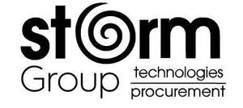

Trade Mark Journal No.2025/040 3 October 2025
UK00004266996 19 September 2025 (9,35,36,37,40,42)

- Class 9
- Cloud servers; cloud database software; computer software; computer software for providing interface and management features that enable a cloud computing management platform; computer software used for cloud computing management, namely, network access, application deployment, network management, virtualization management, asset management, security operations, identity management, data encryption, authentication, data mining, data analytics, decision support, collaboration tools, consumption metering of computer resources, billing, and reporting; computer software for cloud and virtual infrastructure management, namely, software for management and monitoring of cloud and virtual computing resources, for software application and software platform deployment to clouds, for software application and computing resource provisioning, for cloud security and cloud firewall configuration, for creating and managing policies and access controls for cloud governance, for software release automation, and for enabling software development in the cloud; computer software for managing data for virtualization and enterprise cloud computing; mobile application software; mobile phone applications in fields of mining, engineering, energy, construction, building; computer software for procurement management; computer software for supply chain management; computer software for logistics management; computer software for inventory management; computer software for warehouse management; computer software for vendor management; computer software for sourcing and supplier management; computer software for purchase order management; computer software for contract management; computer software for asset tracking and management; computer software for project management relating to procurement and supply chain operations; computer software for data analytics relating to procurement, supply chain and logistics; computer software for compliance management relating to procurement and supply chain operations; computer software in the fields of mining, engineering, energy, construction, building; computer hardware, namely, computers, servers and storage devices; computer software for use in controlling the operation and execution of computer systems, programs, and networks; computer software for use in connecting disparate computer networks and systems, including computer servers; computer operating system software; computer software for managing hardware, software and processes that exist within an information technology environment, instructional manuals sold as a unit therewith; computers; parts and fittings for the aforesaid goods.
- Class 35
- Business management; business administration; business consulting; provision of commercial and business information; business development services; business planning; business strategy services; corporate management services; advertising; marketing; promotional services; business operation of commercial real estate; business consulting services, namely, assisting organizations in the field of cloud computing infrastructure; business management consulting and business consulting services in the field of hybrid IT architectures and migrations; business management and consulting services relating to mining, engineering, energy, and construction industries; business consulting services relating to procurement in the fields of mining, engineering, energy, construction, building; supply chain management and consulting services for mining, engineering, energy, and construction industries; business process outsourcing in the field of information technology to optimize hybrid IT architectures and migrations; business analysis and business strategic planning services in the technology industry; business analysis and strategic planning services relating to mining, engineering, energy, and construction industries; management assistance services; management consulting services; outsourcing services (business assistance); outsource service provider in the field of business management; procurement services; procurement of goods on behalf of other businesses; procurement services for others [purchasing goods and services for other businesses]; outsourcing services in nature of arranging procurement of goods for others; procurement services relating to mining equipment and apparatus; procurement services relating to construction equipment and machinery; procurement services relating to engineering equipment and apparatus; procurement services relating to energy generation equipment; supply chain management services; logistics management services; vendor management services; services of holding companies, namely business management and business administration services for subsidiaries and affiliated companies; supplier management services; procurement, namely, purchasing protective and safety equipment, clothing, footwear, headgear, safety headgear, safety footwear, safety clothing, gloves, safety glasses, earplugs or muffs, hard hats, respirators, vests, safety monitoring apparatus, safety devices, protection devices, security devices, computers, laptops, mobile phones, computer peripherals, computer systems, machines, engines, parts for engines, vehicles, haulage trucks, diggers and excavators, industrial vehicles, industrial trucks, parts and fittings for land vehicles, anti-theft devices for vehicles, locks and padlocks, valves, spark plugs, machine tools, agricultural apparatus and equipment, agricultural instruments, forestry machines, hand tools and implements (hand-operated), electrical apparatus, electrical instruments, lighting apparatus, lighting equipment, heating apparatus and instruments, diagnostic apparatus and instruments, articles for cleaning, articles for scouring, articles for polishing for others; import and export services; international trade consulting services; customs clearance services; inventory management services; business services relating to the arrangement of joint ventures, partnerships and consortiums in mining, engineering, energy, and construction industries; advertising and promotional services relating to computer services; advertising and promotional services relating to mining, engineering, energy, and construction industries; online retail store services relating to the sale of computers, computer hardware, computer peripherals, computer software, telecommunication apparatus and equipment; online retail store services relating to the sale of mining, construction, engineering and energy equipment and apparatus; business administration, management, information and consultancy services relating to the administration of information technology including information relating to this provided on-line from a computer database or the Internet; the bringing together, for the benefit of others, of a variety of goods, enabling customers to conveniently view and purchase those goods from an internet web site specialising in information technology, namely, computers, computer hardware and computer software, computer peripherals for both hardware and software, telecommunications apparatus and telecommunication equipment; the bringing together, for the benefit of others, of a variety of goods, enabling customers to conveniently view and purchase those goods from an internet web site specialising in mining, construction, engineering and energy equipment and apparatus; providing computerized tracking and tracing of packages in transit; distribution of samples; data processing services; providing automated registration for customer identifying shipping account information over the global computer network; information, advisory, and consultancy services relating to the aforesaid.
- Class 36
- Financial services; monetary affairs; financial management; investment services; investment management; investment advisory services; investment consultancy; investment analysis; investment research; investment portfolio management; real estate services; real estate acquisition services; arranging for ownership of real estate; management of assets; real estate management; brokerage regarding real estate and mortgages (real estate affairs); real estate appraisal (surveys); property management; rental of accommodation (real estate); financial and monetary affairs; mutual funds and capital investment, fund investments; property management; financial transactions; financial analysis; financial brokerage services; stock exchange quotations; securities brokerage; financial consultancy; savings banks; fiscal and financial evaluations; financial information; company payment services; brokerage relating to financial instruments; financial management for individuals and collective investment undertakings; tax and duty services; corporate holding of share capital services; Financial management of holding companies; information, advisory and consultancy services in relation to the aforesaid.
- Class 37
- Maintenance and repair of hardware; computer installation and repair; computer installation and maintenance services; installation, repair and maintenance of computer hardware; installation, repair and maintenance of computer peripherals; installation, repair and maintenance of computers; installation, repair and maintenance of computer apparatus and equipment; installation, repair and maintenance of telecommunications apparatus and equipment; installation, repair and maintenance of mining equipment and apparatus; installation, repair and maintenance of construction equipment and machinery; installation, repair and maintenance of engineering equipment and apparatus; installation, repair and maintenance of energy generation equipment; installation, maintenance and repair of pipeline systems; installation, maintenance and repair of electronic equipment; underwater construction, installation, maintenance and repair; installation, repair maintenance, and commissioning of industrial equipment and machinery; technical installation services; installation, repair and maintenance in the fields of mining, engineering, energy, construction, building; information, advisory, and consultancy services relating to the aforesaid.
- Class 40
- Recycling services relating to computers; recycling services relating to computer peripherals; recycling services relating to computer hardware; recycling services relating to telecommunications apparatus and equipment; recycling services relating to mining equipment and apparatus; recycling services relating to construction equipment and machinery; recycling services relating to engineering equipment and apparatus; recycling services relating to energy generation equipment; recycling services relating to industrial equipment and machinery; waste treatment and disposal services in the fields of mining, construction, engineering, energy and energy industries; material recovery services; scrap metal processing and recycling; electronic waste recycling and disposal; hazardous waste treatment and disposal relating to industrial equipment; refurbishment and reconditioning of industrial equipment and machinery; recycling services in the fields of mining, engineering, energy, construction, building; information, advisory, and consultancy services relating to the aforesaid.
- Class 42
- Computer services; computer services in the fields of mining, engineering, energy, construction, building; industrial analysis, industrial research and industrial design services; quality control and authentication services; design and development of computer software; consultancy including technical consultancy services relating to information technology (including but not limited to computer hardware, computer peripherals, computers, computer software, telecommunications apparatus and equipment); technical consultancy services relating to procurement systems and processes; technical consultancy services relating to supply chain management; technical consultancy services relating to logistics management; technical consultancy services relating to mining, engineering, energy and construction industries; rental of information technology equipment, apparatus and instruments (including but not limited to computer hardware and computer software but excluding communications and telecommunications); installation, repair, servicing and maintenance of computer software; computer aided design relating to build projects; computer aided design relating to mining projects; computer aided design relating to engineering projects; computer aided design relating to energy projects; computer aided design relating to construction projects; technical design services relating to procurement and supply chain operations; industrial design services relating to mining, engineering, energy and construction equipment; hosting the web sites of others; website development; website design; creating websites; website design services; website development services; hosting computer sites [websites]; building and maintaining websites; creating and maintaining websites; creation and maintenance of websites; hosting the websites of others; design and programming of websites; design of homepages and websites; hosting websites on the internet; design and construction of homepages and websites; creating and maintaining websites for mobile phones; hosting and rental of memory space for websites; creating, maintaining and hosting the websites of others; design, creation, hosting, maintenance of websites for others; industrial and graphic art design; computer-aided design of video graphics; design and graphic arts designing for the creation of web sites; design and graphic arts designing for the creation of web pages on the Internet; graphic design for the compilation of web pages on the internet; consultancy relating to the creation and design of websites; consultancy relating to the creation and design of websites for e-commerce; software as a service for cloud hosting; application service for email, calendaring and task management (hosted exchange); online backup application service related to computers and software (online backup); application service used to manage virtual machine instances (cloud servers); application service for browser-based collaboration and document management (sharepoint cloud services); application service for virtual server environment (virtual private server); hosted Security services/cloud security services; managed security services; email anti-spam/anti-virus services; managed cloud services; hosted customer relationship management software services; software as a service (SaaS) in the fields of mining, engineering, energy, construction, building; software as a service (SaaS) featuring software for procurement management; software as a service (SaaS) featuring software for supply chain management; software as a service (SaaS) featuring software for logistics management; software as a service (SaaS) featuring software for inventory management; software as a service (SaaS) featuring software for vendor and supplier management; platform as a service (PaaS) featuring computer software platforms for procurement and supply chain management; platforms as a service for the provisioning of cloud and applications; hosting, development, and design of mobile applications; consulting services in the field of design, selection, implementation and use of computer hardware and software systems for others; consulting services in the field of design, selection, implementation and use of procurement management systems; consulting services in the field of design, selection, implementation and use of supply chain management systems; consulting services in the fields of mining, engineering, energy, construction, building; technical support services, namely, troubleshooting of computers, servers and computer software problems (computing services); computer systems design services for others; cloud computing design services, namely, networking services integrating computer hardware and software for dynamic provisioning, virtualization, and consumption metering of computer resources; consulting services in the field of cloud computing, namely, cloud readiness assessment services, enterprise application rationalization services, migration services of legacy applications to the cloud, cloud architecture and automation design services; data migration services; Information technology infrastructure management services for remote and onsite monitoring and management of IT resources, IT operations, and IT processes, namely, servers, storage, applications, networks, desktops, server and network virtualization, security, public clouds, private clouds, hybrid clouds and virtual machines; design and development of electronic data and network security systems, and cloud computing management hardware and software; computer services, namely, integration of private and public cloud computing environments; computer services, namely, computer system administration for others; technical consulting services in the field of cloud computing network services; technical support services, namely, monitoring technological functions of cloud computer network systems; providing virtual computer systems and virtual computer environments through cloud computing; consulting in the field of virtualization technologies for enterprises and businesses; providing information technology services over the cloud, namely, infrastructure as a service (IaaS) services featuring computer hardware and software platforms for creating, managing and deploying cloud computing infrastructure services, platform as a service (PaaS) services featuring computer software platforms for managing hybrid cloud, public cloud, private cloud and community cloud-based services, and software as a service (SaaS) services featuring software for managing hybrid cloud, public cloud, private cloud and community cloud-based services; infrastructure as a service (IaaS) services in the nature of providing web-based use of virtualized computer hardware, networking, and storage equipment, namely, providing virtual computer systems and virtual computer environments through cloud computing; providing a web-based system and online portal featuring technology for third parties to remotely manage, administer, modify, and operate data and software applications implemented via distributed computing environments, and for the remote administration and management of the virtualized computing resources, data and software applications; providing online, non-downloadable computer software for cloud management, namely, software for management and monitoring of cloud computing resources, for software application and software platform deployment to clouds, for software application and computing resource provisioning, for cloud security and cloud firewall configuration, for creating and managing policies and access controls for cloud governance, for software release automation, and for enabling software development in the cloud; providing on-line, non-downloadable software for administering and managing virtual infrastructure resources and for managing computer applications for operating distributed applications and networks of computers; providing online, non-downloadable computer software for procurement management; providing online, non-downloadable computer software for supply chain management; providing online, non-downloadable computer software for logistics management; providing online, non-downloadable computer software for inventory and warehouse management; providing online, non-downloadable computer software for vendor and supplier management; data encryption services; cloud services, namely, providing a website featuring temporary use of non-downloadable software which is used by others to design, develop, provide, and manage cloud computing services, namely, infrastructure as a service (IaaS), software as a service (SaaS), platform as a service (PaaS), desktop as a service (DaaS); providing technical support services regarding the usage of communications equipment; providing technical support services regarding procurement systems and supply chain management systems; technical analysis and evaluation services relating to procurement processes and supply chain operations; quality control and authentication services relating to procurement and supply chain management; research and development services relating to procurement technologies and supply chain optimization; information, advisory, and consultancy services relating to the aforesaid.
Storm Trademarks Limited
Representative: Bird & Bird LLP